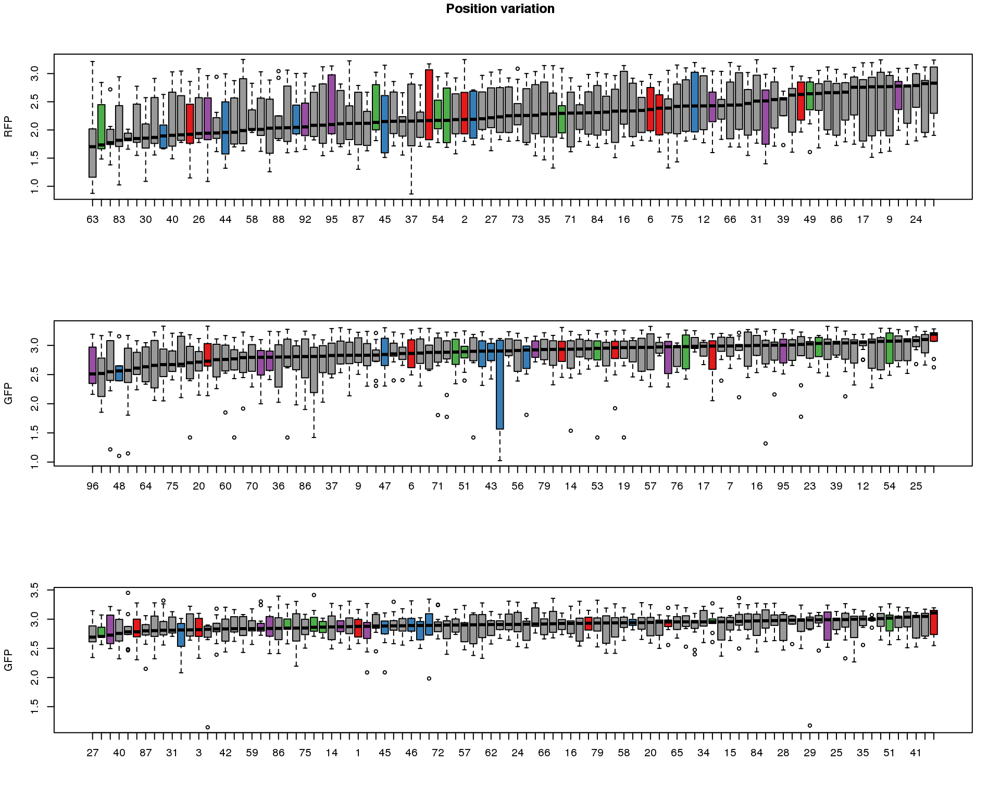
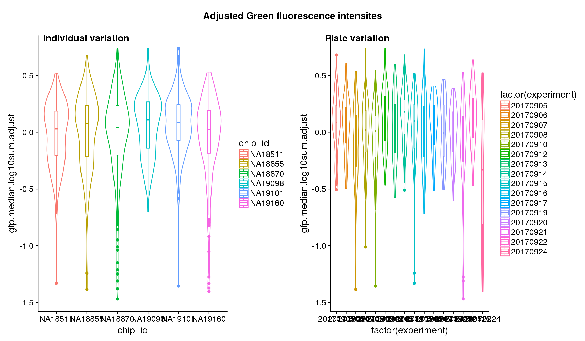
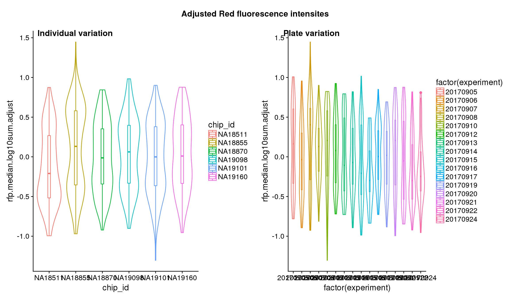
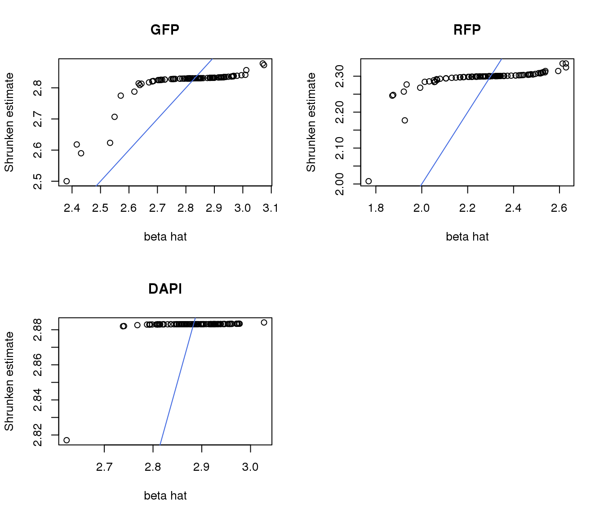
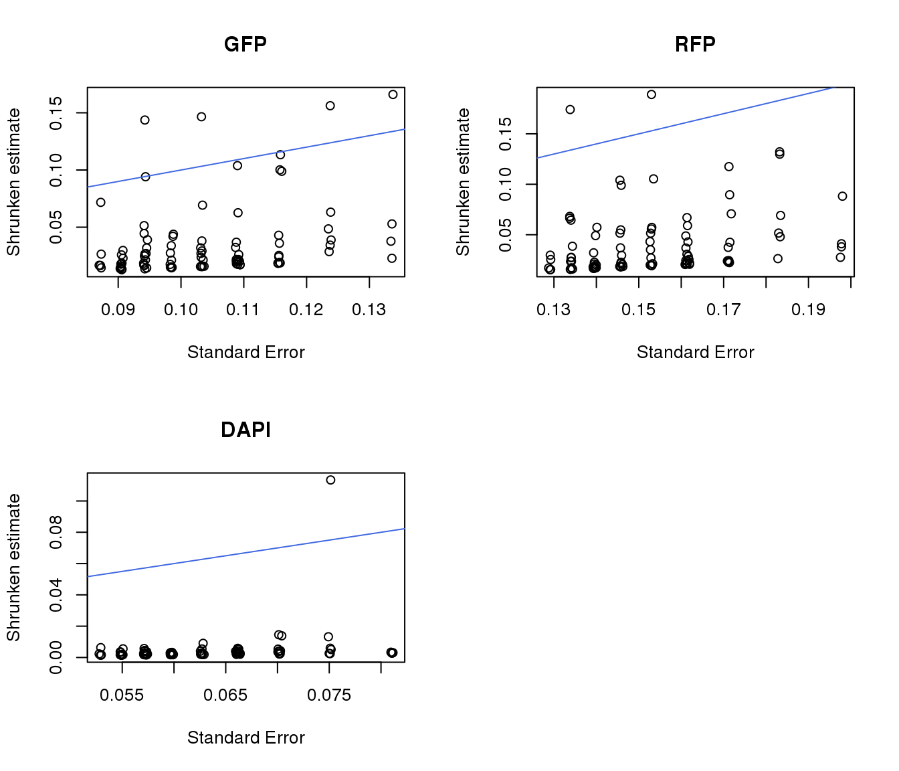

Normalize intensities across batches and positions
Joyce Hsiao
Last updated: 2018-02-23
Code version: b299bc0
Introduction/summary
In notations,
\[ y_{ij} = \mu + \tau_i + \beta_j + \gamma_k + \epsilon_{ij} \] where \(i = 1,2,..., I\) and \(j = 1,2,..., J\). The parameters are estimated under sum-to-zero constraints \(\sum \tau_i = 0\) and \(\sum \beta_j = 0\).
Note that in this model 1) not all \(y_{ij.}\) exists due to the incompleteness of the design, 2) the effects of individual and block are nonorthogonal, 3) the effects are additive due to the block design.
TO DO: Apply batch correction prior to background correction??
Data and packages
\(~\)
library(data.table)
library(dplyr)
library(ggplot2)
library(cowplot)
library(RColorBrewer)
library(Biobase)
library(scales)
library(car)
library(ashr)
library(lsmeans)Read in filtered data.
df <- readRDS(file="../data/eset-filtered.rds")
pdata <- pData(df)
fdata <- fData(df)Source of variation
Statistical tests show that for GFP, there’s significant individual effect, plate effect and position effect, and that for RFP and DAPI, there’s no signficant individual effect or position effect but there’s significant plate effect (all at P<.01).
lm.rfp <- lm(rfp.median.log10sum~factor(chip_id)+factor(experiment) + factor(image_label),
data = pdata)
lm.gfp <- lm(gfp.median.log10sum~factor(chip_id)+factor(experiment) + factor(image_label),
data = pdata)
lm.dapi <- lm(dapi.median.log10sum~factor(chip_id)+factor(experiment) + factor(image_label),
data = pdata)
aov.lm.rfp <- Anova(lm.rfp, type = "III")
aov.lm.gfp <- Anova(lm.gfp, type = "III")
aov.lm.dapi <- Anova(lm.dapi, type = "III")
aov.lm.rfpAnova Table (Type III tests)
Response: rfp.median.log10sum
Sum Sq Df F value Pr(>F)
(Intercept) 44.799 1 193.7809 < 2.2e-16 ***
factor(chip_id) 2.061 5 1.7830 0.113731
factor(experiment) 8.836 15 2.5480 0.001004 **
factor(image_label) 28.830 95 1.3127 0.029625 *
Residuals 202.056 874
---
Signif. codes: 0 '***' 0.001 '**' 0.01 '*' 0.05 '.' 0.1 ' ' 1aov.lm.gfpAnova Table (Type III tests)
Response: gfp.median.log10sum
Sum Sq Df F value Pr(>F)
(Intercept) 60.082 1 569.5986 < 2.2e-16 ***
factor(chip_id) 1.608 5 3.0492 0.009779 **
factor(experiment) 12.174 15 7.6944 2.293e-16 ***
factor(image_label) 14.688 95 1.4658 0.003756 **
Residuals 92.191 874
---
Signif. codes: 0 '***' 0.001 '**' 0.01 '*' 0.05 '.' 0.1 ' ' 1aov.lm.dapiAnova Table (Type III tests)
Response: dapi.median.log10sum
Sum Sq Df F value Pr(>F)
(Intercept) 57.257 1 1474.3536 < 2e-16 ***
factor(chip_id) 0.568 5 2.9233 0.01262 *
factor(experiment) 12.118 15 20.8019 < 2e-16 ***
factor(image_label) 3.333 95 0.9035 0.73028
Residuals 33.942 874
---
Signif. codes: 0 '***' 0.001 '**' 0.01 '*' 0.05 '.' 0.1 ' ' 1Indivdual and plate variation

Position variation
well.gfp.median <- pdata %>% group_by(image_label) %>% summarize(., median(gfp.median.log10sum))
well.rfp.median <- pdata %>% group_by(image_label) %>% summarize(., median(rfp.median.log10sum))
well.dapi.median <- pdata %>% group_by(image_label) %>% summarize(., median(dapi.median.log10sum))
well.pp <- data.frame(well=pdata$well, image_label=pdata$image_label)
well.pp <- well.pp[!duplicated(well.pp),]
colbrew <- brewer.pal(9, "Set1")
well.pp$cols <- rep(colbrew[9], 96)
well.pp$cols[which(well.pp$well %in% c("A03", "A02", "A01", "A09", "A08", "A07"))] <- colbrew[1]
well.pp$cols[which(well.pp$well %in% c("H03", "H02", "H01", "H09", "H08", "H07"))] <- colbrew[2]
well.pp$cols[which(well.pp$well %in% c("A06", "A05", "A04", "A12", "A11", "A10"))] <- colbrew[3]
well.pp$cols[which(well.pp$well %in% c("H06", "H05", "H04", "H12", "H11", "H10"))] <- colbrew[4]
well.pp <- well.pp[order(well.pp$image_label),]
ord.gfp <- as.character(well.gfp.median$image_label[order(well.gfp.median$`median(gfp.median.log10sum)`)])
ord.rfp <- as.character(well.rfp.median$image_label[order(well.rfp.median$`median(rfp.median.log10sum)`)])
ord.dapi <- as.character(well.dapi.median$image_label[order(well.dapi.median$`median(dapi.median.log10sum)`)])These are four corners previously found more likely to have high gene expression values in sequencing data.
par(mfrow=c(1,1))
plot(1:7, 1:7, pch="", axes=F, ann=F)
legend("center", legend = c("A_a", "H_a", "A_b", "H_b"), col=colbrew[c(1,2,3,4)],
pch=16)par(mfrow=c(3,1))
boxplot(rfp.median.log10sum ~ factor(image_label, levels=ord.rfp),
data=pdata, ylab = "RFP",
col=well.pp$cols[as.numeric(ord.rfp)])
abline(h=0, lwd=2, col="royalblue")
boxplot(gfp.median.log10sum ~ factor(image_label, levels=ord.gfp),
data=pdata, ylab = "GFP",
col=well.pp$cols[as.numeric(ord.gfp)])
abline(h=0, lwd=2, col="royalblue")
boxplot(dapi.median.log10sum ~ factor(image_label, levels=ord.dapi),
data=pdata, ylab = "GFP",
col=well.pp$cols[as.numeric(ord.dapi)])
abline(h=0, lwd=2, col="royalblue")
title("Position variation", outer=TRUE, line = -1)
Estimate effects
Contrast test to estimate effects for for plate and position ID.
# make contrast matrix for plates
# each plate is compared to the average
n_plates <- uniqueN(pdata$experiment)
contrast_plates <- matrix(-1, nrow=n_plates, ncol=n_plates)
diag(contrast_plates) <- n_plates-1
# make contrast matrix for individuals
# each individual is compared to the average
n_pos <- uniqueN(pdata$image_label)
contrast_pos <- matrix(-1, nrow=n_pos, ncol=n_pos)
diag(contrast_pos) <- n_pos-1gfp.plates <- summary(lsmeans(lm.gfp, specs="experiment", contrast=contrast_plates))
gfp.pos <- summary(lsmeans(lm.gfp, specs="image_label", contrast=contrast_pos))
rfp.plates <- summary(lsmeans(lm.rfp, specs="experiment", contrast=contrast_plates))
rfp.pos <- summary(lsmeans(lm.rfp, specs="image_label", contrast=contrast_pos))
dapi.plates <- summary(lsmeans(lm.dapi, specs="experiment", contrast=contrast_plates))
dapi.pos <- summary(lsmeans(lm.dapi, specs="image_label", contrast=contrast_pos))Substract plate effect from the raw estimates.
## RFP
pdata$rfp.median.log10sum.adjust <- pdata$rfp.median.log10sum
rfp.plates$experiment <- as.character(rfp.plates$experiment)
rfp.pos$experiment <- as.character(rfp.pos$image_label)
pdata$experiment <- as.character(pdata$experiment)
exps <- unique(pdata$experiment)
for (i in 1:uniqueN(exps)) {
exp <- exps[i]
ii_exp <- which(pdata$experiment == exp)
est_exp <- rfp.plates$lsmean[which(rfp.plates$experiment==exp)]
pdata$rfp.median.log10sum.adjust[ii_exp] <- (pdata$rfp.median.log10sum[ii_exp] - est_exp)
}
pos <- unique(pdata$image_label)
for (i in 1:uniqueN(pos)) {
p <- pos[i]
ii_pos <- which(pdata$image_label == p)
est_pos <- rfp.pos$lsmean[which(rfp.pos$image_label==p)]
pdata$rfp.median.log10sum.adjust[ii_pos] <- (pdata$rfp.median.log10sum[ii_pos] - est_pos)
}
## GFP
pdata$gfp.median.log10sum.adjust <- pdata$gfp.median.log10sum
gfp.plates$experiment <- as.character(gfp.plates$experiment)
gfp.pos$experiment <- as.character(gfp.pos$image_label)
pdata$experiment <- as.character(pdata$experiment)
exps <- unique(pdata$experiment)
for (i in 1:uniqueN(exps)) {
exp <- exps[i]
ii_exp <- which(pdata$experiment == exp)
est_exp <- gfp.plates$lsmean[which(gfp.plates$experiment==exp)]
pdata$gfp.median.log10sum.adjust[ii_exp] <- (pdata$gfp.median.log10sum[ii_exp] - est_exp)
}
pos <- unique(pdata$image_label)
for (i in 1:uniqueN(pos)) {
p <- pos[i]
ii_pos <- which(pdata$image_label == p)
est_pos <- gfp.pos$lsmean[which(gfp.pos$image_label==p)]
pdata$gfp.median.log10sum.adjust[ii_pos] <- (pdata$gfp.median.log10sum[ii_pos] - est_pos)
}
## DAPI
pdata$dapi.median.log10sum.adjust <- pdata$dapi.median.log10sum
dapi.plates$experiment <- as.character(dapi.plates$experiment)
dapi.pos$experiment <- as.character(dapi.pos$image_label)
pdata$experiment <- as.character(pdata$experiment)
exps <- unique(pdata$experiment)
for (i in 1:uniqueN(exps)) {
exp <- exps[i]
ii_exp <- which(pdata$experiment == exp)
est_exp <- dapi.plates$lsmean[which(dapi.plates$experiment==exp)]
pdata$dapi.median.log10sum.adjust[ii_exp] <- (pdata$dapi.median.log10sum[ii_exp] - est_exp)
}
pos <- unique(pdata$image_label)
for (i in 1:uniqueN(pos)) {
p <- pos[i]
ii_pos <- which(pdata$image_label == p)
est_pos <- dapi.pos$lsmean[which(dapi.pos$image_label==p)]
pdata$dapi.median.log10sum.adjust[ii_pos] <- (pdata$dapi.median.log10sum[ii_pos] - est_pos)
}After adjustment

## These are four corners previously found more likely to have high gene expression values in sequencing data.
par(mfrow=c(1,1))
plot(1:7, 1:7, pch="", axes=F, ann=F)
legend("center", legend = c("A_a", "H_a", "A_b", "H_b"), col=colbrew[c(1,2,3,4)],
pch=16)par(mfrow=c(3,1))
boxplot(rfp.median.log10sum.adjust ~ factor(image_label, levels=ord.rfp),
data=pdata, ylab = "RFP",
col=well.pp$cols[as.numeric(ord.rfp)])
abline(h=0, lwd=2, col="royalblue")
boxplot(gfp.median.log10sum.adjust ~ factor(image_label, levels=ord.gfp),
data=pdata, ylab = "GFP",
col=well.pp$cols[as.numeric(ord.gfp)])
abline(h=0, lwd=2, col="royalblue")
boxplot(dapi.median.log10sum.adjust ~ factor(image_label, levels=ord.dapi),
data=pdata, ylab = "GFP",
col=well.pp$cols[as.numeric(ord.dapi)])
abline(h=0, lwd=2, col="royalblue")
title("Position variation", outer=TRUE, line = -1)Output results
Save corrected data to a temporary output folder.
saveRDS(pdata, file = "../output/images-normalize-anova.Rmd/pdata.adj.rds")ash
apply shrinkage to position estimates
# # apply limma ebayes to shrink variances
# library(limma)
# gfp.pos.var <- squeezeVar(gfp.pos$SE^2, df = gfp.pos$df)$var.post
# gfp.pos.df <- squeezeVar(gfp.pos$SE^2, df = gfp.pos$df)$df.prior + gfp.pos$df
gfp.pos.ash <- ash(gfp.pos$lsmean, gfp.pos$SE, mixcompdist = "uniform",
lik = lik_t(df=gfp.pos$df[1]), mode = "estimate" )
# gfp.pos.ash.varpost <- ash(gfp.pos$lsmean, gfp.pos.var, mixcompdist = "uniform",
# lik = lik_t(df=gfp.pos.df), mode = "estimate" )
# rfp.pos.var <- squeezeVar(rfp.pos$SE^2, df = rfp.pos$df)$var.post
# rfp.pos.df <- squeezeVar(rfp.pos$SE^2, df = rfp.pos$df)$df.prior + gfp.pos$df
rfp.pos.ash <- ash(rfp.pos$lsmean, rfp.pos$SE, mixcompdist = "uniform",
lik = lik_t(df=rfp.pos$df[1]), mode = "estimate" )
# rfp.pos.ash.varpost <- ash(rfp.pos$lsmean, rfp.pos.var, mixcompdist = "uniform",
# lik = lik_t(df=rfp.pos.df), mode = "estimate" )
# dapi.pos.var <- squeezeVar(dapi.pos$SE^2, df = dapi.pos$df)$var.post
# dapi.pos.df <- squeezeVar(dapi.pos$SE^2, df = dapi.pos$df)$df.prior + gfp.pos$df
dapi.pos.ash <- ash(dapi.pos$lsmean, dapi.pos$SE, mixcompdist = "uniform",
lik = lik_t(df=dapi.pos$df[1]), mode = "estimate" )
# dapi.pos.ash.varpost <- ash(dapi.pos$lsmean, dapi.pos.var, mixcompdist = "uniform",
# lik = lik_t(df=dapi.pos.df), mode = "estimate" )
#
par(mfrow=c(2,2))
plot(gfp.pos.ash$result$betahat, gfp.pos.ash$result$PosteriorMean,
xlab = "beta hat", ylab = "Shrunken estimate", main = "GFP")
abline(0,1, col = "royalblue")
plot(rfp.pos.ash$result$betahat, rfp.pos.ash$result$PosteriorMean,
xlab = "beta hat", ylab = "Shrunken estimate", main = "RFP")
abline(0,1, col = "royalblue")
plot(dapi.pos.ash$result$betahat, dapi.pos.ash$result$PosteriorMean,
xlab = "beta hat", ylab = "Shrunken estimate", main = "DAPI")
abline(0,1, col = "royalblue")
par(mfrow=c(2,2))
plot(gfp.pos.ash$result$sebetahat, gfp.pos.ash$result$PosteriorSD,
xlab = "Standard Error", ylab = "Shrunken estimate", main = "GFP")
abline(0,1, col = "royalblue")
plot(rfp.pos.ash$result$sebetahat, rfp.pos.ash$result$PosteriorSD,
xlab = "Standard Error", ylab = "Shrunken estimate", main = "RFP")
abline(0,1, col = "royalblue")
plot(dapi.pos.ash$result$sebetahat, dapi.pos.ash$result$PosteriorSD,
xlab = "Standard Error", ylab = "Shrunken estimate", main = "DAPI")
abline(0,1, col = "royalblue")
Plate effect.
library(ashr)
gfp.plates.ash <- ash(gfp.plates$lsmean, gfp.plates$SE, mixcompdist = "uniform",
lik = lik_t(df=gfp.plates$df[1]), mode = "estimate")
rfp.plates.ash <- ash(rfp.plates$lsmean, rfp.plates$SE, mixcompdist = "uniform",
lik = lik_t(df=rfp.plates$df[1]), mode = "estimate")
dapi.plates.ash <- ash(dapi.plates$lsmean, dapi.plates$SE, mixcompdist = "uniform",
lik = lik_t(df=dapi.plates$df[1]), mode = "estimate")
par(mfrow=c(2,2))
plot(gfp.plates.ash$result$betahat, gfp.plates.ash$result$PosteriorMean,
xlab = "beta hat", ylab = "Shrunken estimate", main = "GFP")
abline(0,1, col = "royalblue")
plot(rfp.plates.ash$result$betahat, rfp.plates.ash$result$PosteriorMean,
xlab = "beta hat", ylab = "Shrunken estimate", main = "RFP")
abline(0,1, col = "royalblue")
plot(dapi.plates.ash$result$betahat, dapi.plates.ash$result$PosteriorMean,
xlab = "beta hat", ylab = "Shrunken estimate", main = "DAPI")
abline(0,1, col = "royalblue")
par(mfrow=c(2,2))
plot(gfp.plates.ash$result$sebetahat, gfp.plates.ash$result$PosteriorSD,
xlab = "Standard Error", ylab = "Shrunken estimate", main = "GFP")
abline(0,1, col = "royalblue")
plot(rfp.plates.ash$result$sebetahat, rfp.plates.ash$result$PosteriorSD,
xlab = "Standard Error", ylab = "Shrunken estimate", main = "RFP")
abline(0,1, col = "royalblue")
plot(dapi.plates.ash$result$sebetahat, dapi.plates.ash$result$PosteriorSD,
xlab = "Standard Error", ylab = "Shrunken estimate", main = "DAPI")
abline(0,1, col = "royalblue")Substract plate effect from the raw estimates.
## RFP
pdata$rfp.median.log10sum.adjust.ash <- pdata$rfp.median.log10sum
rfp.plates$experiment <- as.character(rfp.plates$experiment)
rfp.pos$experiment <- as.character(rfp.pos$image_label)
pdata$experiment <- as.character(pdata$experiment)
exps <- unique(pdata$experiment)
for (i in 1:uniqueN(exps)) {
exp <- exps[i]
ii_exp <- which(pdata$experiment == exp)
est_exp <- rfp.plates.ash$result$PosteriorMean[which(rfp.plates$experiment==exp)]
pdata$rfp.median.log10sum.adjust.ash[ii_exp] <- (pdata$rfp.median.log10sum[ii_exp] - est_exp)
}
pos <- unique(pdata$image_label)
for (i in 1:uniqueN(pos)) {
p <- pos[i]
ii_pos <- which(pdata$image_label == p)
est_pos <- rfp.pos.ash$result$PosteriorMean[which(rfp.pos$image_label==p)]
pdata$rfp.median.log10sum.adjust.ash[ii_pos] <- (pdata$rfp.median.log10sum[ii_pos] - est_pos)
}
## GFP
pdata$gfp.median.log10sum.adjust.ash <- pdata$gfp.median.log10sum
gfp.plates$experiment <- as.character(gfp.plates$experiment)
gfp.pos$experiment <- as.character(gfp.pos$image_label)
pdata$experiment <- as.character(pdata$experiment)
exps <- unique(pdata$experiment)
for (i in 1:uniqueN(exps)) {
exp <- exps[i]
ii_exp <- which(pdata$experiment == exp)
est_exp <- gfp.plates.ash$result$PosteriorMean[which(gfp.plates$experiment==exp)]
pdata$gfp.median.log10sum.adjust.ash[ii_exp] <- (pdata$gfp.median.log10sum[ii_exp] - est_exp)
}
pos <- unique(pdata$image_label)
for (i in 1:uniqueN(pos)) {
p <- pos[i]
ii_pos <- which(pdata$image_label == p)
est_pos <- gfp.pos.ash$result$PosteriorMean[which(gfp.pos$image_label==p)]
pdata$gfp.median.log10sum.adjust.ash[ii_pos] <- (pdata$gfp.median.log10sum[ii_pos] - est_pos)
}
## DAPI
pdata$dapi.median.log10sum.adjust.ash <- pdata$dapi.median.log10sum
dapi.plates$experiment <- as.character(dapi.plates$experiment)
dapi.pos$experiment <- as.character(dapi.pos$image_label)
pdata$experiment <- as.character(pdata$experiment)
exps <- unique(pdata$experiment)
for (i in 1:uniqueN(exps)) {
exp <- exps[i]
ii_exp <- which(pdata$experiment == exp)
est_exp <- dapi.plates.ash$result$PosteriorMean[which(dapi.plates$experiment==exp)]
pdata$dapi.median.log10sum.adjust.ash[ii_exp] <- (pdata$dapi.median.log10sum[ii_exp] - est_exp)
}
pos <- unique(pdata$image_label)
for (i in 1:uniqueN(pos)) {
p <- pos[i]
ii_pos <- which(pdata$image_label == p)
est_pos <- dapi.pos.ash$result$PosteriorMean[which(dapi.pos$image_label==p)]
pdata$dapi.median.log10sum.adjust.ash[ii_pos] <- (pdata$dapi.median.log10sum[ii_pos] - est_pos)
}After adjustment
## These are four corners previously found more likely to have high gene expression values in sequencing data.
par(mfrow=c(1,1))
plot(1:7, 1:7, pch="", axes=F, ann=F)
legend("center", legend = c("A_a", "H_a", "A_b", "H_b"), col=colbrew[c(1,2,3,4)],
pch=16)
par(mfrow=c(3,1))
boxplot(rfp.median.log10sum.adjust.ash ~ factor(image_label, levels=ord.rfp),
data=pdata, ylab = "RFP",
col=well.pp$cols[as.numeric(ord.rfp)])
abline(h=0, lwd=2, col="royalblue")
boxplot(gfp.median.log10sum.adjust.ash ~ factor(image_label, levels=ord.gfp),
data=pdata, ylab = "GFP",
col=well.pp$cols[as.numeric(ord.gfp)])
abline(h=0, lwd=2, col="royalblue")
boxplot(dapi.median.log10sum.adjust.ash ~ factor(image_label, levels=ord.dapi),
data=pdata, ylab = "GFP",
col=well.pp$cols[as.numeric(ord.dapi)])
abline(h=0, lwd=2, col="royalblue")
title("Position variation", outer=TRUE, line = -1)Output results
Save corrected data to a temporary output folder.
saveRDS(pdata, file = "../output/images-normalize-anova.Rmd/pdata.adj.rds")Session information
R version 3.4.1 (2017-06-30)
Platform: x86_64-redhat-linux-gnu (64-bit)
Running under: Scientific Linux 7.2 (Nitrogen)
Matrix products: default
BLAS/LAPACK: /usr/lib64/R/lib/libRblas.so
locale:
[1] LC_CTYPE=en_US.UTF-8 LC_NUMERIC=C
[3] LC_TIME=en_US.UTF-8 LC_COLLATE=en_US.UTF-8
[5] LC_MONETARY=en_US.UTF-8 LC_MESSAGES=en_US.UTF-8
[7] LC_PAPER=en_US.UTF-8 LC_NAME=C
[9] LC_ADDRESS=C LC_TELEPHONE=C
[11] LC_MEASUREMENT=en_US.UTF-8 LC_IDENTIFICATION=C
attached base packages:
[1] parallel stats graphics grDevices utils datasets methods
[8] base
other attached packages:
[1] bindrcpp_0.2 lsmeans_2.27-61 ashr_2.2-4
[4] car_2.1-6 scales_0.5.0 Biobase_2.38.0
[7] BiocGenerics_0.24.0 RColorBrewer_1.1-2 cowplot_0.9.2
[10] ggplot2_2.2.1 dplyr_0.7.4 data.table_1.10.4-3
loaded via a namespace (and not attached):
[1] Rcpp_0.12.15 mvtnorm_1.0-7 lattice_0.20-35
[4] Rmosek_7.1.3 zoo_1.8-1 assertthat_0.2.0
[7] rprojroot_1.3-2 digest_0.6.15 foreach_1.4.4
[10] truncnorm_1.0-7 R6_2.2.2 plyr_1.8.4
[13] backports_1.1.2 MatrixModels_0.4-1 evaluate_0.10.1
[16] coda_0.19-1 pillar_1.1.0 rlang_0.2.0
[19] lazyeval_0.2.1 pscl_1.5.2 multcomp_1.4-8
[22] minqa_1.2.4 SparseM_1.77 nloptr_1.0.4
[25] Matrix_1.2-10 rmarkdown_1.8 labeling_0.3
[28] splines_3.4.1 lme4_1.1-15 stringr_1.3.0
[31] REBayes_1.3 munsell_0.4.3 compiler_3.4.1
[34] pkgconfig_2.0.1 etrunct_0.1 SQUAREM_2017.10-1
[37] mgcv_1.8-17 htmltools_0.3.6 nnet_7.3-12
[40] tibble_1.4.2 codetools_0.2-15 MASS_7.3-47
[43] grid_3.4.1 nlme_3.1-131 xtable_1.8-2
[46] gtable_0.2.0 git2r_0.21.0 magrittr_1.5
[49] estimability_1.3 stringi_1.1.6 doParallel_1.0.11
[52] sandwich_2.4-0 TH.data_1.0-8 iterators_1.0.9
[55] tools_3.4.1 glue_1.2.0 pbkrtest_0.4-7
[58] survival_2.41-3 yaml_2.1.16 colorspace_1.3-2
[61] knitr_1.20 bindr_0.1 quantreg_5.35 This R Markdown site was created with workflowr